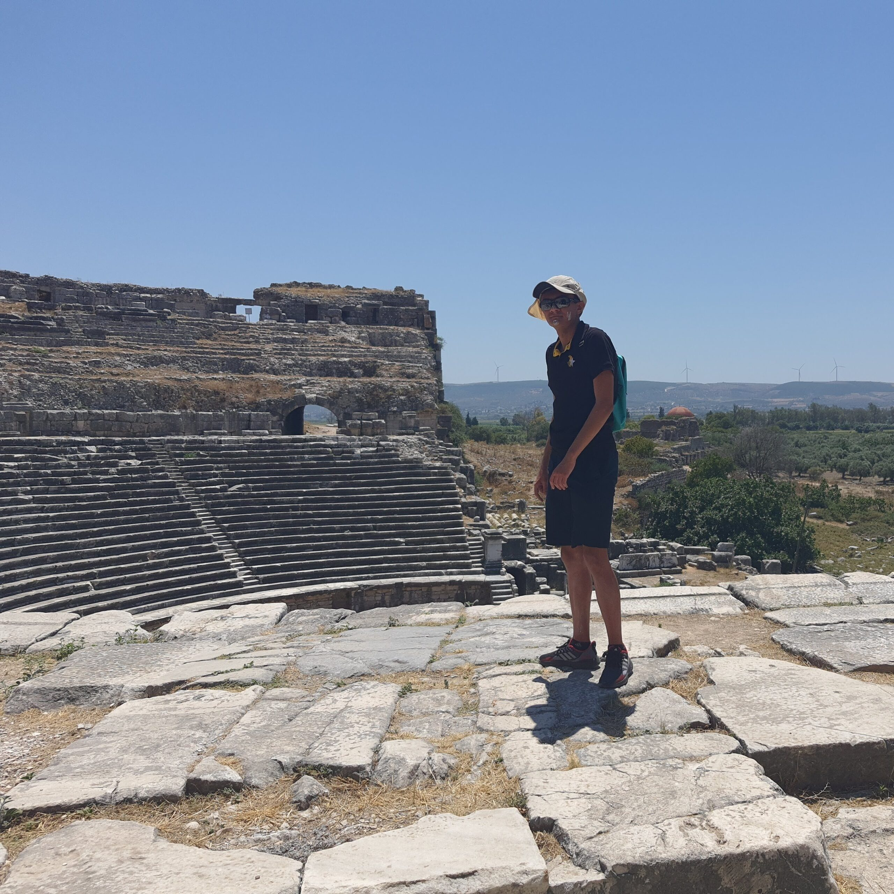
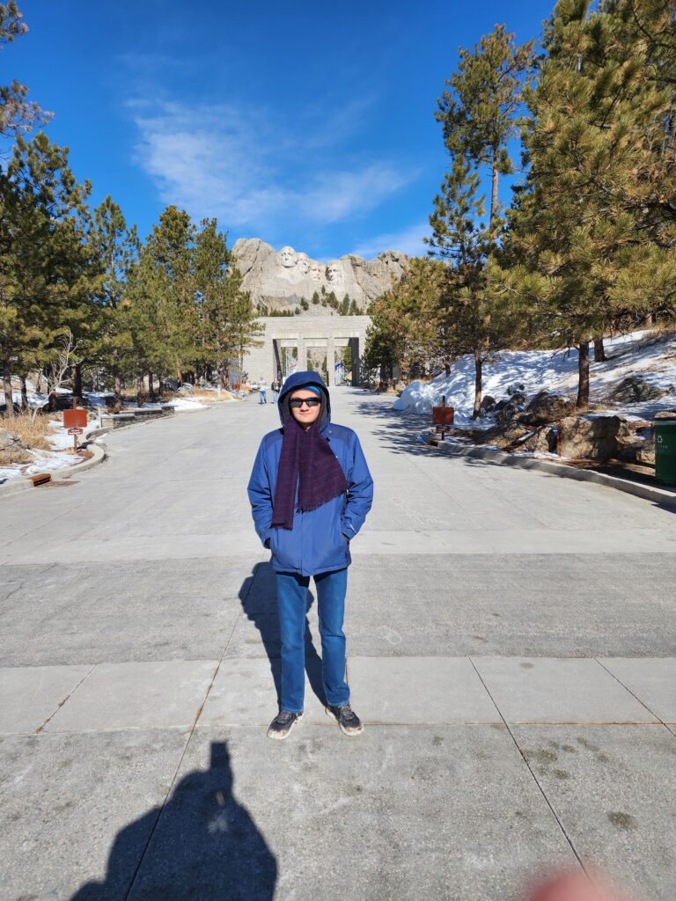
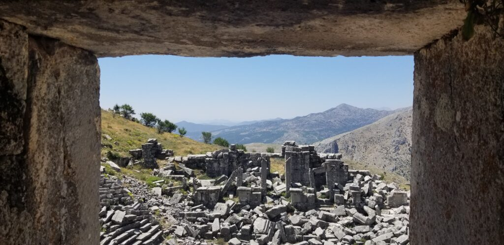
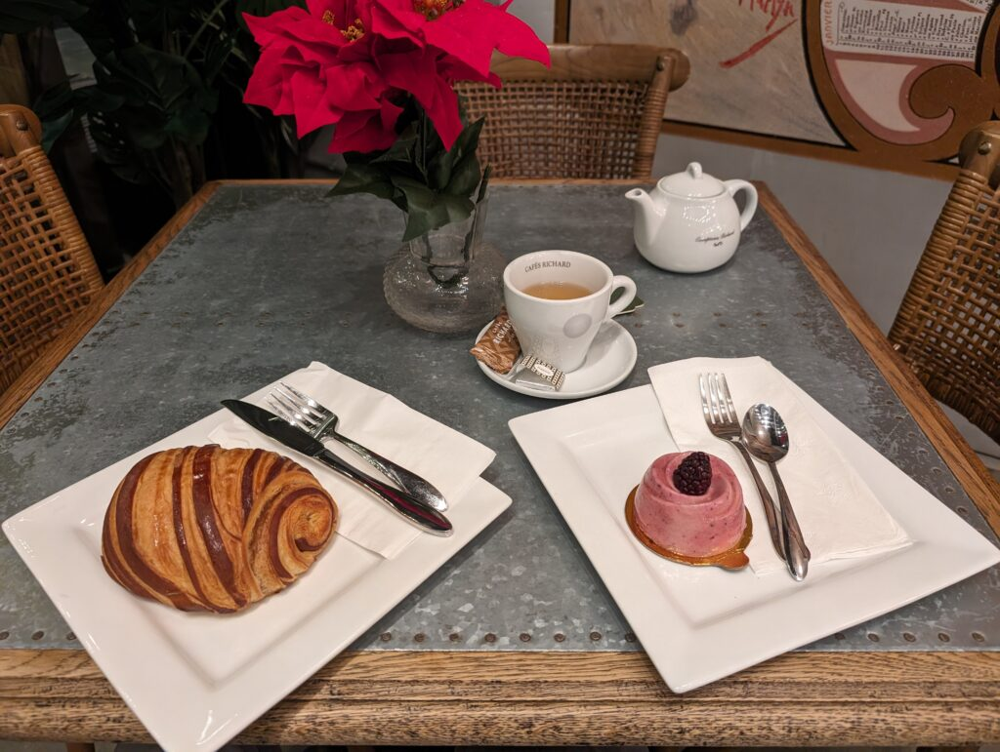
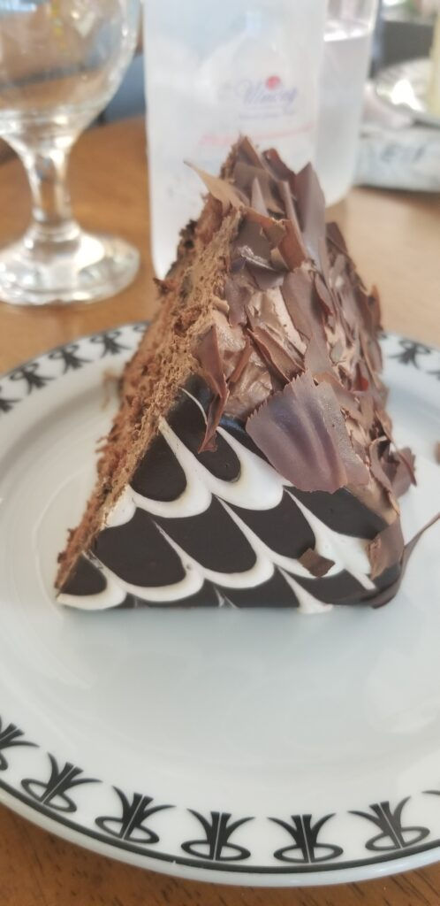
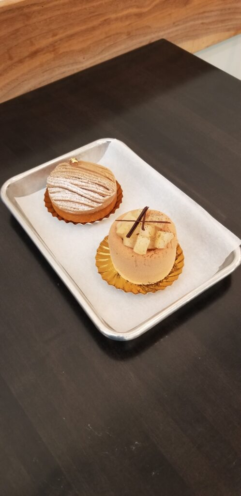
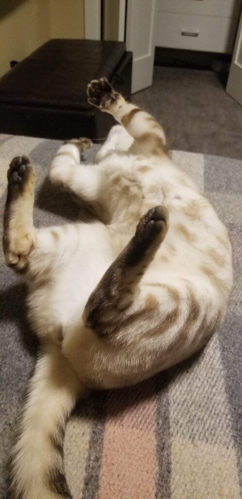
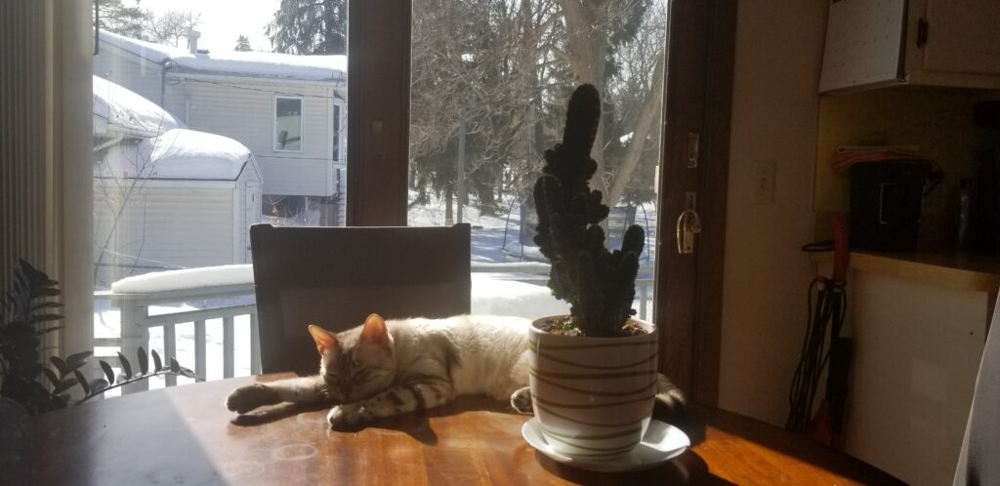
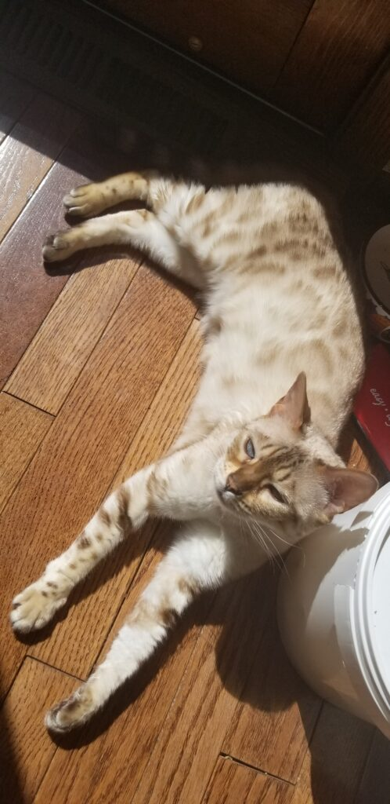
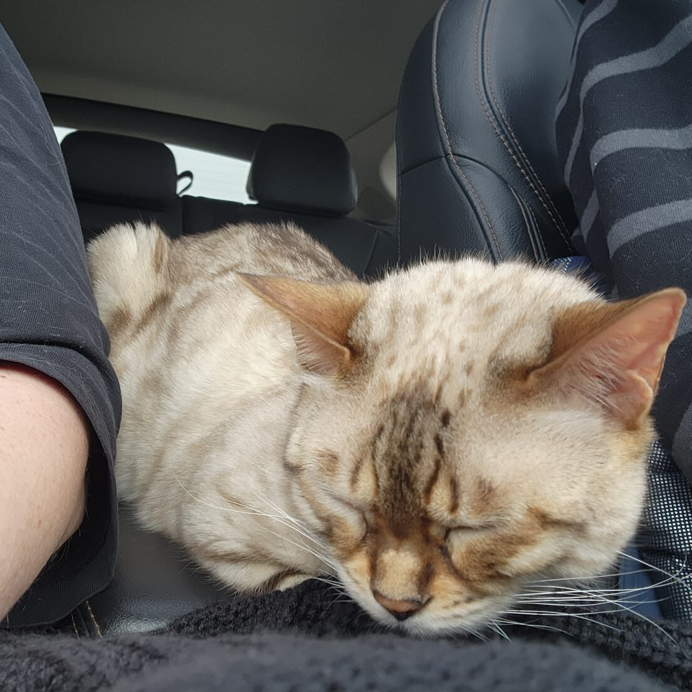

Beyond the Code
A few of the things that inspire and drive me outside of technology.
🌍 Travel & Exploration
In a vast world, there is undoubtedly vast beauty. At the core is the beauty of nature; the shimmering sunsets and lush landscapes watching which our civilization emerged, imposing equally magnificent constructions. My ancestral Turkey is a prime travel destination, at the intersection of numerous civilizations, from Mesopotamians to Greeks and Ottomans.



🍰 The Art of Pastry
“Success is precisely measured not by wealth or status, but by the kilos of Baklava one consumes over the course of their lifetime.”



🎻 Music & Performance
Music is surprisingly mathematical, an algebra of sorts that once internalized, opens up a universe of compositional artistry. Having played classical violin for 15 years, I learned discipline and the joy of daily improvement. As a vocal performer in several operas, I learned to balance gentle phrasing with the physicality needed to fill a concert hall. Music truly warms the soul, a connection to other worlds that transcends cultural boundaries.
Faure’s ‘Pie Jesu’ (Summer 2023)
Bach’s ‘Quia Respexit’ (Age 13)
🐈 And Of Course... Cats!




📜 Poetry
To me, poetry is an artistic tool second only to music. The expressiveness associated with the form and semantics of a poem create many opportunities for impact, beauty, and discourse.
Resonance from the Shadows
In the forlorn darkness and undulating depth
With fleeting hope I yearn for everlasting strength
To seek solace and peace amidst the teeming masses
Wander freely among the scarred souls in absence
And locate a perch for their withering ashes.
I know that such courage shall never arrive
Unburden me from unending strife, nor
Grace my spirits with her majestic stride.
But buried deep within my internal sepulchre
Lies a fervor, a vehemence so severe
It induces fear in those whom it does not
Bring tears. If only it were not restrained
In the threshold of a captor
crueler than those bodies depraved
I would rise, rise beyond the chilled hearts
and still chests of scattered souls, the trumpets
of ravens signaling a feast to their flock, or
the final glint of sunlight surveying the morning dew
parting its colors across a vibrant spectrum.
Icarus would be envious of these triumphant wings
Fastened not by wax and twine but unbridled rage
Not just mine, but of an entire nation
Projected against the temporal scale of generations
To thrust this one particular man into bold flight.
My psychic energy nonetheless dwindles
Fibers of hatred convolve in magnificent spindles
They tighten around my neck never to be released
The universe cast me into dark shadows it seemed
Forever deferred is the dream that I dreamed.